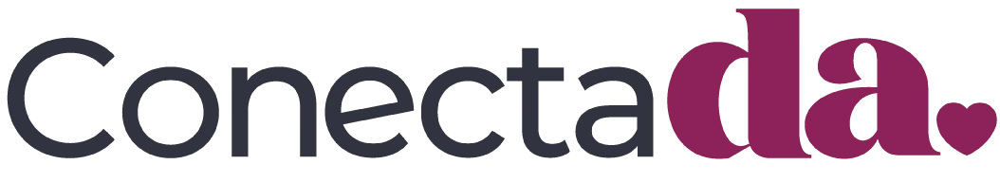

Desarrolla una conexión profunda e inquebrantable contigo
Un programa de entrenamiento mental y emocional para mujeres conscientes que priorizan su salud mental

Eres una mujer consciente que prioriza su SALUD MENTAL, agenda espacios para su bienestar y crecimiento.
Ya has trabajado en tu autoconocimiento pero quieres profundizar en la conexión contigo.
Muchas veces te agota exigirte demasiado.
Todavía corres por ser suficiente.
Quieres soltar cargas que no son tuyas sin sentirte culpable.
Aún te cuesta colocarte limites y colocarlos a tus vínculos más cercanos.
El miedo a decepcionarte o decepcionar a los demás alguna vez decide por ti.
La culpa hace de las suyas y te genera malestar
Quieres soltar cargas que no son tuyas sin sentirte culpable.
Aún te cuesta colocarte limites y colocarlos a tus vínculos más cercanos.
El miedo a decepcionarte o decepcionar a los demás alguna vez decide por ti.
La culpa hace de las suyas y te genera malestar
Decidir libre y sin culpa con límites firmes sin dejar de ser empática
Escuchar activamente tu voz y confiar en ella
Bajar volumen a la autoexigencia dañina (GERTRUDIZ) y vivir una vida ligera
Gestionar todos tus miedos.
Coherencia entre lo que piensas, sientes y haces.
Mejorar tus relaciones.
Conocerte tanto que puedas identificar cualquier alarma y actuar antes de agotarte.
Decir adiós a la culpa y la presión.
Decidir por ti alineada a tus nuevas creencias y expectativas

Llevo años trabajando con mujeres como tú y por mucho tiempo también estuve allí. Así que puedo asegurarte que puedes transformar la autoexigencia que te daña en plenitud y libertad.
Sesión inicial: aplicación de test proyectivos
Hoja de ruta de acción con objetivos ajustados a tus necesidades
04 módulos: clases 1:1 personalizadas
01 guía de ejercicios por módulo
02 meditaciones guiadas
01 sesión de cierre
Soporte vía WhatsApp una vez a la semana
Te garantizo que con todo lo que vivirás en conectaDA el cambio será tan notorio que las personas a tu alrededor te preguntarán ¿qué has estado haciendo?